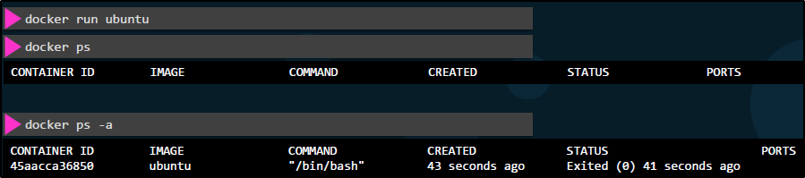

Supponiamo che vogliamo tenere viva un container di ubuntu:

Quindi: chi dice quale processo sta runnando su un Container?
Il Container finisce solo quando l'app o il servizio finisce.
Guardiamo meglio cosa runnano i Dockerfile: runnano CMD ed un comando!

Vediamo il Dockerfile di Ubuntu:
runna bash!
Bash ascolta per un input, ma se non trova il terminale quitta immediatamente.

Come cambiamo questa cosa?
1) In modo temporaneo: Facciamo override del comando, specificandoglielo a run

2) Possiamo creare la nostra immagine a partire da quella online!
NB: Nel caso vogliamo specificare CMD con sintassi JSON (E.G. CMD ["command", "param"],
il primo argument deve essere sempre il comando da eseguire!

Ma cosa possiamo fare, nel caso vogliamo cambiare il numero di secondi?
Fatto così, per ora, fa solo 5 secondi e basta.
Possiamo fare 2 cose:
1) Scrivere ogni volta "docker run container_name sleep 10"
2) Usare un Entrypoint, in modo che ogni volta che il container è create necessita del numero di secondi che vogliamo.

E per settare un valore di Default per l'ENTRYPOINT?
Basta aggiungere CMD dopo come argument!
E' possibile fare override quando creiamo il Container.
Se proprio dobbiamo cambiare l'Entrypoint a runtime,
possiamo usare il parametro --entrypoint